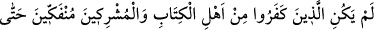
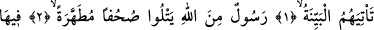
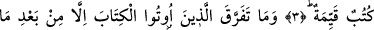
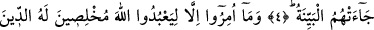
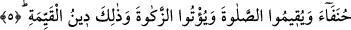

SAĞLAM DİN DE BUDUR
Bismillâhirrahmânirrahîm
1. Apaçık delil kendilerine gelinceye kadar ehl-i kitaptan ve müşriklerden
inkârcılar (küfürden) ayrılacak değillerdi.
2. (İşte o apaçık delil,) Allah tarafından gönderilen ve tertemiz sahifeleri okuyan
bir elçidir.
3. En doğru hükümleri havi (sahifeler)
4. Kendilerine kitap verilenler ancak o açık delil (Peygamber) kendilerine
geldikten sonra ayrılığa düştüler.
5. Halbuki onlara ancak, dini yalnız O’na has kılarak ve hanifler olarak Allah’a
kulluk etmeleri, namaz kılmaları ve zekât vermeleri emrolunmuştu. Sağlam din de
budur.
“Apaçık deliller kendilerine gelinceye kadar” Yahudi ve Hırıstiyan “ehl-i kitaptan
ve” puta tapan “müşriklerden inkârcılar” Hakk’a uyacaklarına, âhir zamanda
gönderilecek olan Peygamber’e îman edeceklerine ve bu sözlerini yerine
getireceklerine dâir olan vaadlerinden “ayrılacak değillerdi.”
Âyetin başındaki ism-i mevsul olan “ellezine” sonra gelen kelimenin fiil olarak
seçilmesi, ehl-i ktabın inkâra sapmalarının, Peygamberlerinden sonra olduğuna işâret
etmek içindir. Yine aynı âyette yer alan “min” harf-i cerri ba’zıyyet bildirmek için değil,
beyâniyedir. Yoksa bazı müşriklerin kâfir olmadıkları gibi bir imaj doğardı. Yani âyette
murâd edilen: “Ehli kitaptan ve müşriklerden inkâr eden bir kısım” değil, “Ehl-i kitap
ve müşriklerden inkârcılar.” demektir. Kâfirler iki kısımdır. Yahudi ve Hırıstiyan
fırkaları gibi ehl-i kitap ve Müşrikler. Müşrikler herhangi bir kitaba müntesip
değillerdi. Allah bu âyet-i kerimede önce “ellezîne keferû” buyurarak, iki sınıf kâfiri
toptan ifâde buyurmuş; sonra da “min ehlil’l-kitap ve’l-müşrikin” buyurarak onları